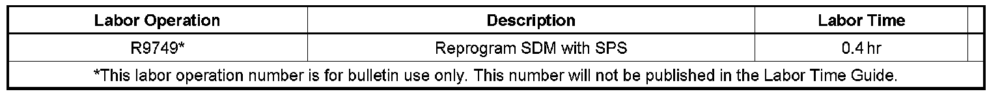

OnStar(R) - False Crash Detection Customer Calling
TECHNICALBulletin No.: 08-08-46-002
Date: June 26, 2008
Subject:
OnStar(R) Calls Unwanted, False Crash Detection Customer Calling (Reprogram SDM)
Models:
2007 Cadillac Escalade, Escalade ESV, Escalade EXT
2007 Chevrolet Avalanche, Silverado, Suburban, Tahoe
2007 GMC Sierra, Yukon, Yukon XL, Yukon Denali, Yukon Denali XL
with OnStar(R) (RPO UE1)
Condition
Some customers may comment on receiving unwanted calls from the OnStar(R) Center.
Cause
During certain extreme vehicle maneuvers, the vehicle SDM may mistakenly detect a crash event and generate a call to the OnStar(R) call Center. The OnStar(R) advisor is connected to the vehicle to see if everyone is alright and if a request for emergency help is needed.
Correction
A revised SDM Operating System software has been developed to address this issue. Reprogram the Sensing and Diagnostic Module (SDM) with the controller option described as "SDM Sensing and Diagnostic Module" under Operating System using the TIS2WEB Service Programming System (SPS) application. As always, make sure your Tech 2(R) is updated with the latest software version.
Warranty Information

For vehicles repaired under warranty, use the table above.

Disclaimer